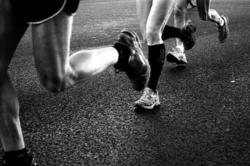

¿Te gusta correr? Te explicamos los beneficios de este deporte
¿Sabías que al correr liberamos endorfinas que nos ayudan a aluchar contra la depresión? Además, nos ayuda a relajarnos, a la vez que eliminamos el estrés y conseguimos un adecuado descanso nocturno.
La práctica de este ejercicio es de las más simples, pues podemos salir a correr cuando queramos y sin tener que gastar nada de dinero. Podemos ir a un gimnasio o podemos salir a correr por las calles y por los parques cerca de dónde vivimos. Además, correr es un deporte que no requiere de mucho material, ya que sólo con unas zapatillas y un pantalón de chándal tenemos todo lo que necesitamos.
Beneficios a la salud de correr
Por otro lado, los beneficios que correr nos aporta a la salud también son muchos. Debemos pensar que es uno de los deportes que no requiere de ningún tipo de dieta y que nos permite tener una buena forma e ir adelgazando progresivamente. Además, correr nos ayuda a mejorar la circulación sanguínea de nuestro cuerpo, lo que nos permitirá aliviar los dolores que tengamos o las varices. Es un deporte que también nos ayuda a eliminar los líquidos que retenemos y nos ayuda a mejorar la concentración.